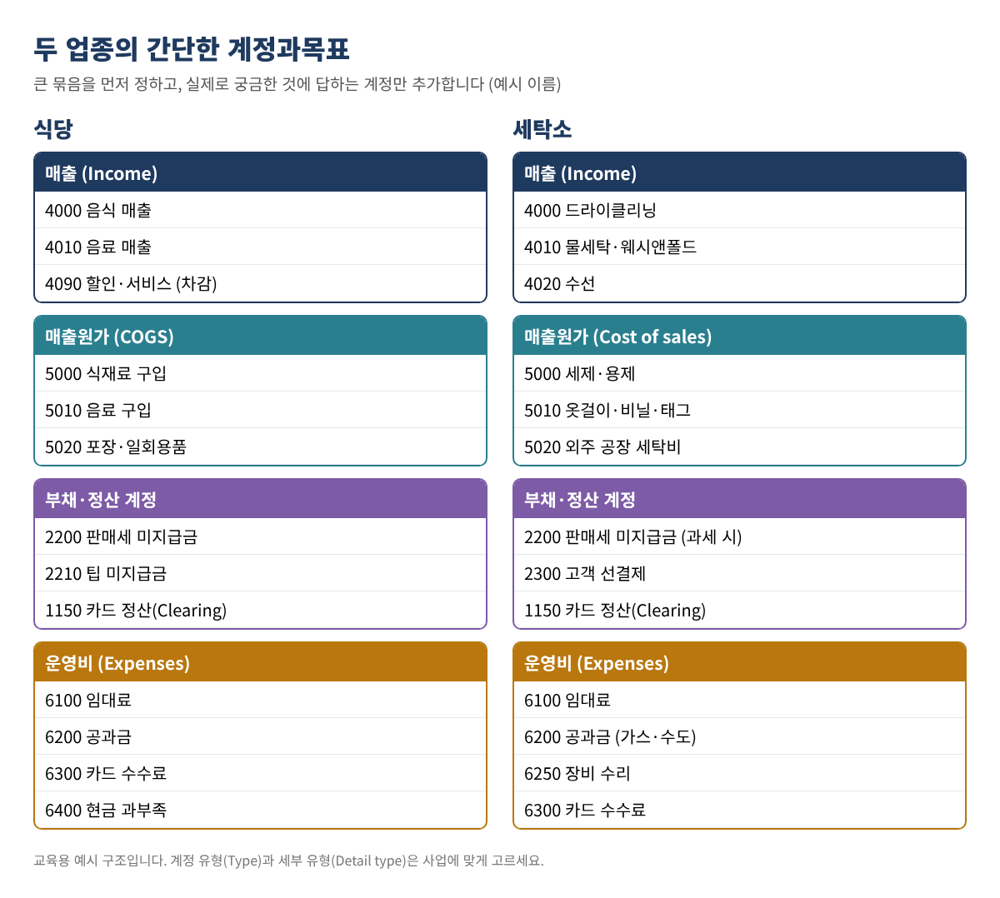
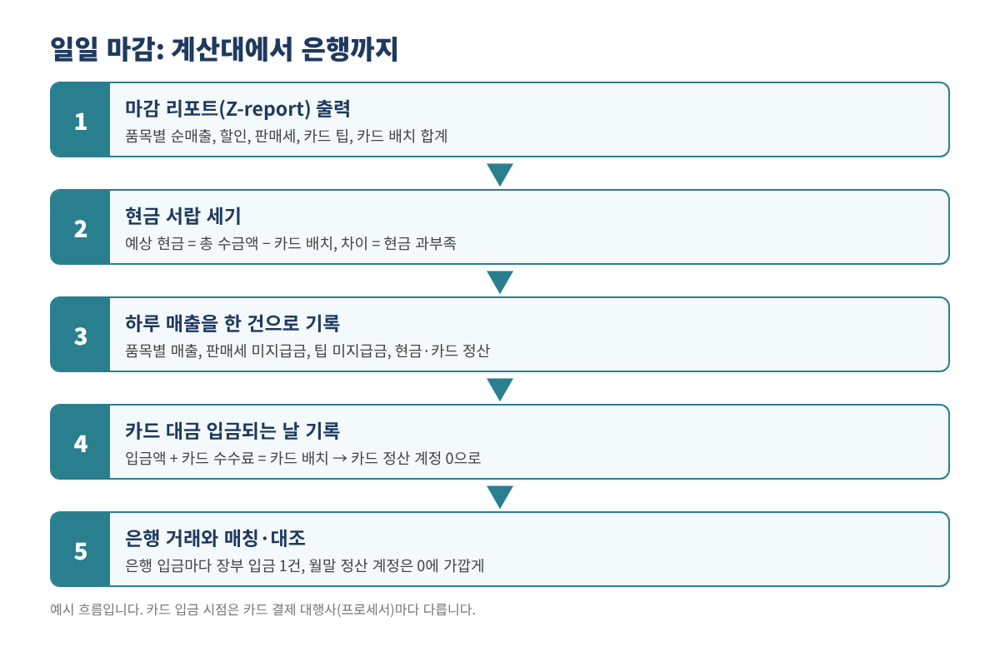
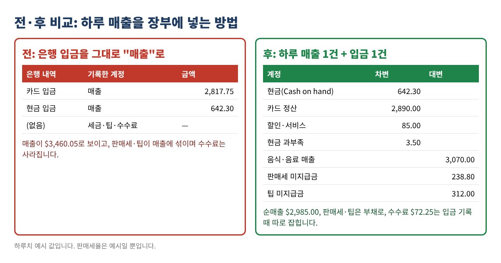

식당·세탁소 QuickBooks 세팅: 계정과목표 만들기와 은행 입금과 맞아떨어지는 일일 마감
식당과 세탁소는 공통점이 있습니다. 하루에도 수십, 수백 건의 작은 매출이 생기고, 현금과 카드가 섞여 들어오며, 판매세가 붙고, 식당이라면 직원에게 돌아갈 팁까지 함께 받습니다. 그런데 기본 계정과목표를 그대로 쓰면서 은행 입금을 전부 "매출(Sales)"로 넣으면 금방 세 가지 문제가 생깁니다. 매출이 부풀려지고, 판매세와 팁이 매출 속에 숨어 버리고, 카드 수수료는 장부에서 사라집니다. 연말이 되면 실제로 얼마를 벌었는지 아무도 모르게 됩니다.
이 글은 이 문제를 직접 해결하는 방법을 정리했습니다. 업종에 맞는 짧은 계정과목표를 만들고, QuickBooks Online에 가져오고(Desktop 사용자 안내 포함), 계산대 마감 리포트를 은행 입금과 맞아떨어지는 깔끔한 기록 한 건으로 바꾸는 5분짜리 일일 마감 방법입니다.
이런 분께: QuickBooks Online 또는 Desktop을 쓰는 식당·카페·푸드트럭·세탁소 사장님과 장부 담당자 중, 매일의 매출·세금·입금을 딱 맞추고 싶은 분.
1단계. 계정과목표가 답해야 할 질문부터 정하기
계정과목표는 돈을 나눠 담는 바구니 목록입니다. 계정을 하나라도 만들기 전에, 매달 장부에서 알고 싶은 질문을 적어 보세요. 식당이라면 보통 이렇습니다. 음식과 음료 매출이 각각 얼마인가? 식재료비가 음식 매출의 몇 %인가? 남의 돈인 판매세와 팁을 얼마나 갖고 있나? 카드 수수료는 얼마 나갔나? 세탁소도 비슷합니다. 드라이클리닝·물세탁·수선 매출 구분, 세제·용제 같은 재료비, 외주 공장 비용, 고객이 미리 낸 돈 등입니다.
계정은 짧게 유지하세요. 매장 하나라면 20~40개면 충분합니다. 계정 번호를 쓰면 목록이 순서대로 정렬됩니다(1000번대 자산, 2000번대 부채, 3000번대 자본, 4000번대 매출, 5000번대 매출원가, 6000번대 비용).

그대로 따라 쓸 수 있는 예시 계정
| 번호·계정 이름 | 유형(Type) | 세부 유형(Detail type, 가장 가까운 것) | 쓰는 이유 |
|---|---|---|---|
| 1150 카드 정산 (Card Clearing) | Other Current Assets | Other Current Assets | 카드 매출을 카드사 입금 전까지 담아 둠 |
| 2200 판매세 미지급금 | Other Current Liabilities | Sales Tax Payable | 주 정부에 낼 판매세 |
| 2210 팁 미지급금 | Other Current Liabilities | Other Current Liabilities | 직원에게 줄 카드 팁 (식당) |
| 2300 고객 선결제 | Other Current Liabilities | Other Current Liabilities | 맡길 때 받았지만 아직 찾아가지 않은 옷 (세탁소, 발생주의 장부) |
| 4000 음식 매출 / 드라이클리닝 | Income | Sales of Product Income 또는 Service/Fee Income | 주 매출 |
| 4090 할인·서비스 | Income | Discounts/Refunds Given | 공짜로 나간 금액을 숨기지 않고 보여 줌 |
| 5000 식재료 / 세제·용제 | Cost of Goods Sold | Supplies & Materials - COGS | 파는 것의 직접 원가 |
| 6300 카드 수수료 | Expenses | Bank Charges | 입금 때 빠져나간 카드 수수료 |
| 6400 현금 과부족 | Expenses | Other Miscellaneous Service Cost (또는 가까운 것) | 매일 현금 서랍 차이 |
표 1. QuickBooks Online 계정 유형을 붙인 예시 계정. 세부 유형 이름은 회사 파일마다 조금 다를 수 있으니 목록에서 가장 가까운 것을 고르세요.
2단계. 엑셀이나 구글 시트로 가져오기 파일 만들기
첫 줄은 제목, 그 아래로 한 줄에 계정 하나씩 입력합니다. 많이 쓰는 열은 다음과 같습니다.
Account Number(설정에서 계정 번호 사용을 켠 경우에만)Account NameType(예: Income, Expenses, Other Current Liabilities)Detail Type
가져오기 전에 실수를 잡아 주는 수식 두 개가 있습니다. 계정 이름이 B열에 있다면 중복은 =IF(COUNTIF($B$2:$B$60,B2)>1,"DUPLICATE","")로 표시합니다. 이미 회사 파일에 있는 계정을 찾으려면 현재 계정과목표를 내보내 두 번째 탭(Existing)에 붙이고 =IF(ISNUMBER(MATCH(B2,Existing!A:A,0)),"ALREADY EXISTS","")를 씁니다. 다 되면 CSV(UTF-8)로 저장하세요. 영어 계정 이름을 권합니다. 세무 보고서나 회계사와 주고받을 때 편합니다.
QuickBooks Online으로 가져오기
- 먼저 백업: 현재 계정과목표를 엑셀로 내보내 기록을 남깁니다.
- 계정과목표 가져오기 도구를 엽니다. 이 글을 쓰는 시점에는 Settings(톱니바퀴) 메뉴의 Import data에서 Chart of Accounts를 고르는 방식입니다. 메뉴 이름은 바뀔 수 있으니 화면이 다르면 Intuit 공식 도움말 "Import Chart of Accounts templates"를 따르세요.
- CSV를 올리고, 내 열을 QuickBooks 항목에 하나씩 연결(mapping)한 뒤 미리보기를 확인합니다. 오류 표시된 줄은 대부분 Type이나 Detail Type 철자 문제입니다.
- 가져오기를 마치면 계정과목표를 열어 계정 5개 정도를 직접 확인합니다.
- 쓰지 않을 기본 계정은 삭제하지 말고 비활성(Make inactive)으로 바꿔 실수로 쓰지 않게 합니다.
QuickBooks Desktop 사용자: Desktop은 가져오기 기능으로 엑셀이나 IIF 파일에서 목록을 가져올 수 있습니다. 버전·연도마다 단계가 다르므로 사용 중인 버전의 Intuit Desktop 도움말을 따르고, 먼저 백업 사본에서 계정 2~3개로 시험해 보세요.
3단계. 일일 마감 시트 만들기
계산대나 POS는 하루 마감 리포트(흔히 Z-report)를 출력합니다. 그 합계를 하루 한 줄씩 시트에 옮겨 적습니다. 식당 하루치 예시입니다(모든 값은 예시이며 8% 세율도 예시일 뿐입니다).
| 셀 | 항목 | 값 | 수식 |
|---|---|---|---|
| B2 | 음식 매출 | 2,450.00 | Z-report |
| B3 | 음료 매출 | 620.00 | Z-report |
| B4 | 할인·서비스 | 85.00 | Z-report |
| B5 | 순매출 | 2,985.00 | =B2+B3-B4 |
| B6 | 받은 판매세 | 238.80 | Z-report (검산: =ROUND(B5*0.08,2)) |
| B7 | 카드 팁 | 312.00 | Z-report |
| B8 | 총 수금액 | 3,535.80 | =B5+B6+B7 |
| B9 | 카드 배치 합계(팁 포함) | 2,890.00 | 카드 단말기 |
| B10 | 있어야 할 현금 | 645.80 | =B8-B9 |
| B11 | 센 현금 | 642.30 | 서랍 현금에서 시작 잔돈을 뺀 금액 |
| B12 | 현금 과(+)·부족(−) | −3.50 | =B11-B10 |
표 2. 식당 하루 일일 마감 예시. 예시 값입니다.
세탁소도 같은 시트를 쓰되 매출 줄만 드라이클리닝·물세탁·수선으로 바꾸고, 보통 팁 줄은 없습니다. 주에 따라 과세되는 서비스와 아닌 서비스가 다르니 과세·비과세 매출은 따로 적고, 어떤 서비스가 과세 대상인지는 해당 주 판매세 기관에서 확인하세요.

4단계. 하루에 기록 한 건
하루 매출은 차변과 대변이 같은 기록 한 건이 됩니다. 차변은 돈이 어디로 갔는지, 대변은 왜 받았는지입니다.
| 계정 | 차변 | 대변 |
|---|---|---|
| 현금 (Cash on hand 또는 Undeposited Funds) | 642.30 | |
| 카드 정산 | 2,890.00 | |
| 할인·서비스 | 85.00 | |
| 현금 과부족 | 3.50 | |
| 음식 매출 | 2,450.00 | |
| 음료 매출 | 620.00 | |
| 판매세 미지급금 | 238.80 | |
| 팁 미지급금 | 312.00 | |
| 합계 | 3,620.80 | 3,620.80 |
표 3. 하루 매출 기록 예시. 차변과 대변 합계가 같아야 합니다.
시트에 점검 칸을 하나 두세요: =ROUND(SUM(차변)-SUM(대변),2). 0.00이 나와야 입력합니다. 현금이 남는 날은 현금 과부족이 차변이 아니라 대변으로 갑니다.
분개(Journal entry)냐, 판매 영수증(Sales receipt)이냐? QuickBooks Online에서는 하루를 분개(+ New → Journal entry)로 넣거나, "Daily Sales" 같은 이름의 고객 앞으로 판매 영수증을 만들어 매출 항목별 품목(Item), 할인 줄, 팁 줄을 넣을 수 있습니다. Intuit 도움말 "Record total daily sales in QuickBooks"가 판매 영수증 방식을 설명합니다. QuickBooks Online의 판매세 기능을 쓴다면, 분개로 넣은 판매세는 판매세 화면에 같은 방식으로 반영되지 않을 수 있어 보통 판매 영수증 방식이 더 안전합니다. 정하기 전에 Intuit 도움말로 한 번 더 확인하세요.
5단계. 카드 입금과 수수료 기록
하루 이틀 뒤 카드사가 $2,890.00이 아니라 $2,817.75를 입금합니다. 수수료 $72.25를 떼었기 때문입니다. 기록은 이렇게 합니다. 차변 Checking 2,817.75, 차변 카드 수수료 72.25, 대변 카드 정산 2,890.00. QuickBooks Online에서는 은행 입금(Bank deposit) 화면에서 수수료를 마이너스 줄로 넣고, 은행 피드의 입금 줄은 새로 추가하지 말고 이 입금과 매칭(Match)합니다. 배치가 모두 입금되면 카드 정산 계정은 0으로 돌아가야 합니다. 0이 아니면 빠진 날이 있거나 두 번 들어간 날이 있다는 뜻입니다.
현금도 같습니다. 현금을 은행에 넣을 때 입금표 금액과 같은 입금 한 건으로 현금(또는 Undeposited Funds)에서 Checking으로 옮깁니다.

6단계. 팁과 판매세는 제때 비우기
팁 미지급금은 직원에게 급여나 현금으로 팁을 줄 때 줄어듭니다. 팁 신고와 원천징수에는 별도의 급여 규정이 있으니 IRS Topic No. 761(Tips)을 참고하고 급여 대행사와 확인하세요. 일정 규모 이상의 음식·음료 업소는 연간 팁 정보 신고(Form 8027) 대상이 될 수 있으니 IRS 안내문으로 해당 여부를 확인하세요. 판매세 미지급금은 주 판매세를 신고·납부할 때 줄어듭니다. 월말에 두 잔액이 실제로 낼 금액과 같아야 합니다.
자주 하는 실수
- 은행 입금을 매출로 기록. 판매세와 팁이 매출로 잡히고 카드 수수료가 사라집니다.
- 카드 매출을 수수료 뺀 금액으로 기록. 총 배치 금액을 넣고 수수료를 따로 잡아야 매출과 비용이 정확합니다.
- 계정이 너무 많음. 메뉴마다 계정을 만들면 손익계산서를 읽을 수 없습니다. 세부 내용은 품목이나 클래스로 나누세요.
- 카드 정산 잔액이 계속 늘어나는데 방치. 대개 빠진 날이나 중복된 날이 있습니다.
- 거래가 있는 기본 계정 삭제. 삭제 대신 비활성으로.
- 시작 잔돈을 빼지 않음. 서랍의 시작 현금을 빼고 나서 있어야 할 현금과 비교하세요.
자주 묻는 질문
매출 계정 하나만 쓰고도 항목별 합계를 볼 수 있나요?
네. 판매 영수증 방식으로 품목(Item)을 써서 기록하면 품목별 매출 보고서로 볼 수 있습니다. 다만 매출 계정을 나누면 손익계산서가 훨씬 읽기 쉬워서 둘 다 쓰는 가게가 많습니다.
현금 과부족을 매일 기록해야 하나요?
네. 하루 몇 달러는 흔하지만, 특정 근무조에서 부족이 반복되면 살펴볼 필요가 있습니다.
POS가 은행으로 자동 입금하는데도 카드 정산 계정이 필요한가요?
필요합니다. 입금액은 수수료가 빠진 금액이고 이틀치가 합쳐져 들어오는 경우도 많습니다. 카드 정산 계정이 있으면 배치마다 입금됐는지 증명할 수 있습니다.
세탁소 매출은 옷을 맡길 때 잡나요, 찾아갈 때 잡나요?
회계 방식과 돈을 받는 시점에 따라 다릅니다. 현금주의 가게는 보통 돈을 받은 날 매출로 잡습니다. 맡길 때 선결제를 받고 발생주의 장부를 쓴다면 고객 선결제 계정이 도움이 됩니다. 어떤 방식인지는 세무 담당자에게 확인하세요.
간단 체크리스트
- ☐ 장부가 답해야 할 질문을 적었다
- ☐ 번호 붙은 계정 20~40개를 시트에 정리, 중복 없음
- ☐ 현재 계정과목표를 백업으로 내보냄
- ☐ 가져온 뒤 확인, 안 쓰는 기본 계정은 비활성
- ☐ 일일 마감 시트: 있어야 할 현금, 과부족, 차변 = 대변
- ☐ 카드 입금을 수수료와 함께 기록, 카드 정산 계정 0
- ☐ 월말 팁·판매세 잔액이 실제 낼 금액과 같음
QuickBooks is a registered trademark of Intuit Inc.; not affiliated with or endorsed by Intuit. (QuickBooks는 Intuit Inc.의 등록 상표이며, 이 글은 Intuit과 제휴하거나 승인받은 것이 아닙니다.)
이 글은 교육용 정보이며 세무·법률·회계 자문이 아니고, 어떤 결과도 보장하지 않습니다. 프로그램 화면은 바뀔 수 있으니 Intuit 최신 도움말을 따르시고, 주 판매세 규정은 해당 주 기관에서 확인하거나 전문가와 상의하세요.